|
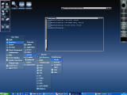 |
Submitted by Mikhael Goikhman. This is a mix of different
fvwm-themes components
plus some additional commands in FvwmConsole. This screenshot shows
new 2.5.x features like transparent FvwmPager in the upper left, png
icons from wm-icons package,
tinted transparent menus, multipixmap titlebars, FvwmButtons on the
bottom that badly simulates the RedmondXP panel (it is managed by
fvwm module written in perl), icons tinted differently in menus,
shadow text and FreeType fonts.
|
 |
Submitted by Dan Espen, shows pixmap borders,
the Fvwm2 setup dialog using FvwmForm,
shaped icons, and a minimal use of fvwm modules. |
|
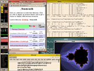 |
Submitted by Michael Han,
multistyle decorations including HGradient titles and a nice
FvwmButtons, swallowing FvwmPager, procmeter and FvwmIconMan. Liberal
use of MiniIcons. |
|
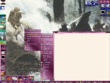 |
Submitted by Robert Ford,
shows gradients in menus and titlebars, FvwmWharf, FvwmTaskBar,
FvwmPager with pixmap backgrounds, some nice icons and mini-icons,
and an interesting purple/blue color scheme. |
|
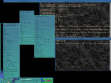 |
Submitted by Dominik Vogt,
shows soft gradients in menus and titlebars, a shaded window on the
left side of the top edge, FvwmButtons on the bottom edge, some menus
containing directory listings (updated every time they are opened)
and a bit of my .fvwm2rc in the top right shell. The colour palette
is one of about twenty I hijacked from CDE. Sub menus are nicely
centered around their parent item (use
'Popup menu-name item +100 c' for this effect).
|
|
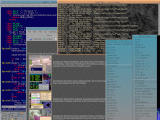 |
Submitted by Dominik Vogt,
another one of my palettes (a list can be seen in the Palette menu),
an example of the 'SubmenusLeft' menu style. I'm fixing a menu bug
in the xemacs window in the background while viewing our screenshots
page with netscape 8-)
|
 |
Submitted by Tomas Ögren,
A pretty lean theme without any annoying thick borders.
FvwmButtons, xmeter, xbuffy, gimp and some stuff on other pages.
|
|
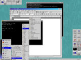 |
Redmond98 theme from
fvwm-themes.
A pretty close Windows 95 look and feel can be duplicated with
fvwm.
|
|
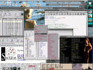 |
Submitted by Paul E. Johnson.
|
|
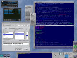 |
Submitted by Ives Aerts.
The screenshot
shows xmms, gfontsel, rxvt with vim and my FvwmButtons. The three
half-height buttons with the up arrows open up wharf-like button
arrays when pressed.
Menus and title bars are lightly gradiented and the (vector) titlebar
buttons were stolen from an old post to the fvwm mailing list. What
you can't see are all kinds of nifty keyboard shortcuts to popup/hide
mutt (mail reader), switch between windows and desks, etc.
|
|
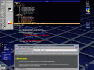 |
Submitted by Lee Willis.
A fairly simple setup, normally used with one window per page, very
easy on the eye, and hardly any decorations to get in your way :)
|
|
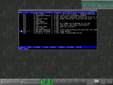 |
Submitted by Jason Kibblewhite.
This is my current favorite fvwm theme. The buttons and gradients
are based on an E fvwm theme which I thought looked quite spiffy.
As you can see I'm playing with FvwmButtons and FvwmTheme. I'm
never totally happy with what I come up with so this current
one has probably changed since this shot was taken.
|
|
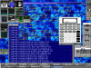
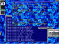 |
Submitted by Olivier Chapuis.
Two screen shots in a small screen (800x600). The first one all
panels up, the second one all panels down and the TaskBar hidden.
Panels are quite useful on such a screen.
The "Window Maker FvwmButtons" has four panels that
run only if I use it: this saves my battery.
|
|
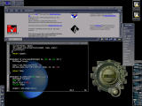 |
Submitted by Andre Bonhote.
My desktop shows (of course) fvwm,
of which not much is being seen actually.
Only the root menu and the decorations are really fvwm-like.
I like gtk so I am using gnome's panels (top and bottom, left hand side).
There's an aterm window using transparency, gqmpeg and netscape, and, of
course, gkrellm running.
For the colors, I used grdb and grdb2fvwm, which takes gnome's colors
and fonts and puts it into my fvwm2rc. it's quite useful, I think.
|
|
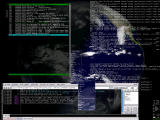 |
Second submission by Andre Bonhote.
Normally, we show one screenshot per user, but just this once,
we'll show how desktops evolve over time. This was submitted Dec 2002,
and the first one was submitted Oct 2000.
Andre says:
This screenshot shows fvwm 2.5.5 (from cvs) with a lot of transparency.
Title bars, borders, menues and pagers (invisible at the moment) are all fully
transparent, some are shaded to look blueish. Besides fvwm2, you see my logs
in three aterms on the right side of the screen. Below that xchat and a small
gkrellm. On the left, there's mutt in an Eterm. The nice background is done
by xplanet and refreshed every 15 minutes.
|
|
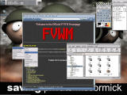 |
Submitted by Kendrick Vargas.
Fvwm2 integrated with GNOME (HelixCode) on RH 7.0 with FvwmGTK Menus,
FvwmPager swallowed into a gnome-panel and showing Mozilla M18 as the web
browser. GTK theme used is minEgtk.
|
|
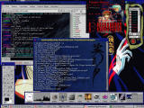 |
Submitted by Tenebrae.
Here's my latest screenshot running FVWM 2.2.4 under RedHat Linux 6.2. I
have a light marble GTK+ theme that I've extended manually onto my FVWM
buttons, and a custom icon or two. I made the blue Vampire Princess Miyu
background for the Eterm, and threw Vampire Princess Miyu skins that I
found onto Licq and xmms. I also customized the title bars a bit with a
textured background that fits in with the overall blueness of the Miyu
stuff. Heres the config file.
|
|
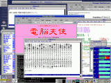 |
Submitted by MURAKAMI Tomokazu.
This is FVWM version 2.3.22. It's compiled with the --enable-kanji
option. With this, I can use Nipponese satisfactorily. Furthermore, I set
up Emacs to be able to use JIS X 0213."
|
|
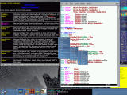 |
Submitted by An Thi-Nguyen Le.
Simple window and menu decors using diagonal and
backwards-diagonal gradients. Buttons are actual defaults
from fvwm. :) The modules used are FvwmButtons (I'd use the
$fg and $bg variables for the swallowed shell but that makes
it harder to read in this case), FvwmPager, FvwmIconMan (the
very bestest icon manager around). Dockapps are xpostit and
wmnetselect. On the right is GKrellM, nice themable stacked
system monitors.
|
|
|
Another one by An Thi-Nguyen Le. I got really really
procrast-- I mean, bored, and fooled around with FvwmTheme for
a while. This particular scheme is borrowing heavily from the
Enlightenment theme AbsoluteE (the blue version) and makes
heavy use of the stretching pixmap feature of FvwmTheme. The
background is Tigert's Blue Space, the GKrellM theme is
something obscure called 3051.
|
|
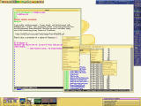 |
A third one by An Thi-Nguyen Le. Here's also a screenshot
of a mockup of Gnutopia, a rather cheery BlackBox theme,
with the large pager retracted (another thing I fooled
around with. Actually, all the buttons retract, just for
the heck of it). Cheery happy yellowy and all that.
|
|
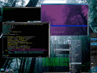 |
Submitted by Shawn Anderson. After seeing An Thi-Nguyen Le's
screenshots(they are very nice BTW), I thought I would send one also
:-). It is fvwm 2.3.28.
|
|
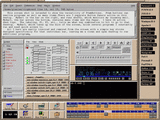 |
Submitted by Glen Lee Edwards.
This screenshot is intended to show the versatility of FvwmButtons.
FvwmButtons can swallow programs as well as menu items.
There are 3 separate FvwmButton panels active on this desktop.
MyBar1 is the button on the right, and runs xbuffy, which monitors my
incoming mail.
MyBar2, the bar across the bottom contains menu items and the FvwmPager.
I have 24 active desktops.
The labeling, F1, F2, etc. tells me which key combination to hit to
go to that desktop.
MyBar3, which takes up the bulk of the screen, holds several programs
I constantly run and need quick access to.
All 3 bars are easily iconized and removed from the screen with a
simple key stroke designed specifically for that individual bar,
leaving me a clean and open desktop to run additional programs.
Note: Check out Glen's excellent FVWM
page
for even more FVWM
screenshots and information.
|
|
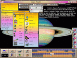 |
Submitted by Glen Lee Edwards.
This screenshot demonstrates the WindowShade feature.
Instead of using icons, you can scroll the window up into
the titlebar.
The left buttons on the titlebar are created using vectors.
The right buttons are pixmaps.
All the buttons are user definable which further demonstrates
FVWM's flexibility.
|
|
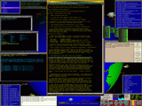 |
Submitted by J C Lawrence.
The basic rules guiding this setup:
-
Modal interfaces are evil.
-
No icons will ever appear on any system I run.
-
Nothing ever gets dragged, nothing ever gets dropped.
-
There will be no system controls which are bound to or only
accessible via particular locations on the screen.
-
Key bindings/keyboard acceleration is your friend.
-
No Z-order limits on any controls or feature accessibility.
-
All controls must be accessible and controllable without
requiring prior access (such as by changing z-order or moving a
window out of the way (BAD!)), or to any other particular window
or X or WM widget or device.
|
|
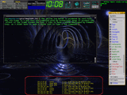 |
Submitted by Christian Lyra.
|
|
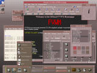 |
Submitted by J.G.A. van Riswick.
This is a screen shot of fvwm mimicking the cde environment.
The setup features motif-style window decorations and
shadow/hilight color calculations. The colors are calculated in
a perl script, which also generates .xresources and .gtkrc files
so that a consistent color scheme is used throughout all
applications. In addition, given background pixmaps are colored
in the same colors, who on turn are reflected in the colors of
the buttons on the pager. To mimic the cde front panel (in the
bottom) I used the gnome panel with some custom applets added.
Left to be done to fully get the cde look are window decorations
for icons.
You can dowload
CDEmu which includes config files and scripts
here.
|
|
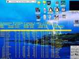 |
Submitted by Filip Hroch.
Filip says:
I've been using Fvwm for many years. Two years ago I created by own
configuration
from an IRIX-like configuration. Today I looked at the nice
screenshots on the www.fvwm.org site and I'm therefore sending my
screenshot with a dfm icon manager and a transparent aterm on the root window.
|
|
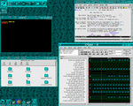 |
Submitted by Christian Michon, who says:
Using fvwm-2.4.6 and loving it.
* Liberal usage of FvwmWharf, FvwmTheme, FvwmAnimate
* Plenty of xpm...
* Gradients were not used: pixmaps with reduced color
were used instead
Fvwm2 *does* rock! Waiting impatiently for native PNG support.
(Christian's wish was fulfilled.)
|
|
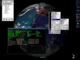 |
Submitted by Remko Troncon.
Remko says:
This screenshot shows a clean and simple desktop
setup.
On the top left
is FvwmButtons which opens panels of apps I use frequently for a
very short time (like IM's). On the top right,
GKrellM is showing
all the things I like to monitor. The bottom right corner contains
FvwmPager. The background is generated by
Xplanet.
The fonts show the anti-aliasing support of FVWM.
The icons
in the menus are mostly taken from the
wm-icons distribution.
|
 |
Submitted by Cameron Simpson. Uses Xinerama.
This is the
Zen style by Cameron Simpson,
details here.
|
 |
Submitted by Parv.
Parv says:
(fvwm 2.5.4) shows titles on bottom and on right hand side,
sticky windows with and without title-bars, FvwmPager, and
aterm with transparent background and tinting.
You can visit Parv's web site and see
the
configuration file.
See also the
annotated version of the screen shot.
|
|
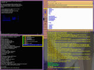 |
Submitted by Marc A. Lehmann.
This is an Xinerama desktop showing some interesting side mounted titles,
flat borders and gradients in the titlebars.
The
config file
is M4 based and contains some interesting stuff too.
Mark says:
... features XineramaSls, a really old fvwm config incrementally
updated to fvwm2 over the years. The config tries to implement the
following:
- clean and reasonably fast (ok, gradients crept in over time ;)
- the active window must be very visible
- lots of virtual desktops, overlaps reduced to the minimum
- no unnecessary clutter, large terminals
- syslog on root-window using root-tail
|
|
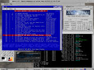 |
Submitted by Len Philpot.
Len says:
it's simple (no transparent
terminals, multiple modules, etc., etc), but that might be a nice
contrast to all the "walk and talk" .fvwm2rc's out there. It does have
custom pixmaps buttons and titlebar, along with FvwmButtons on the
taskbar...
I'd like
to combine the maximize and restore buttons into one.
The question mark button brings up a form containing choices for all the
FVWM man pages, which launch in their own xterms.
|
{kind=link}

{kind=link}
{kind=link}
{kind=link}
{kind=link}

{kind=link}
{kind=link}
{kind=link}
{kind=link}
{kind=link}
{kind=link}
{kind=link}
{kind=link}
{kind=link}
{kind=link}
{kind=link}
{kind=link}
{kind=link}
{kind=link}
{kind=link}
{kind=link}
{kind=link}
{kind=link}
{kind=link}
{kind=link}
{kind=link}
{kind=link}
{kind=link}
{kind=link}

{kind=link}
{kind=link}
{kind=link}